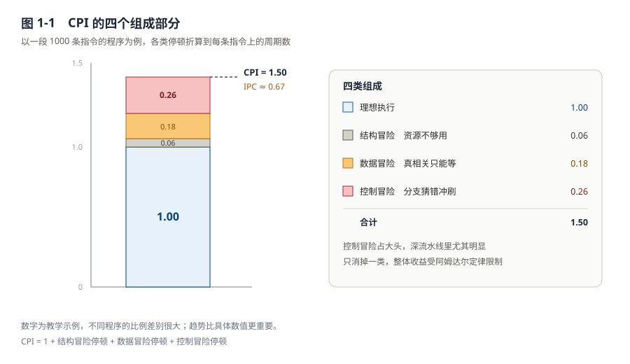
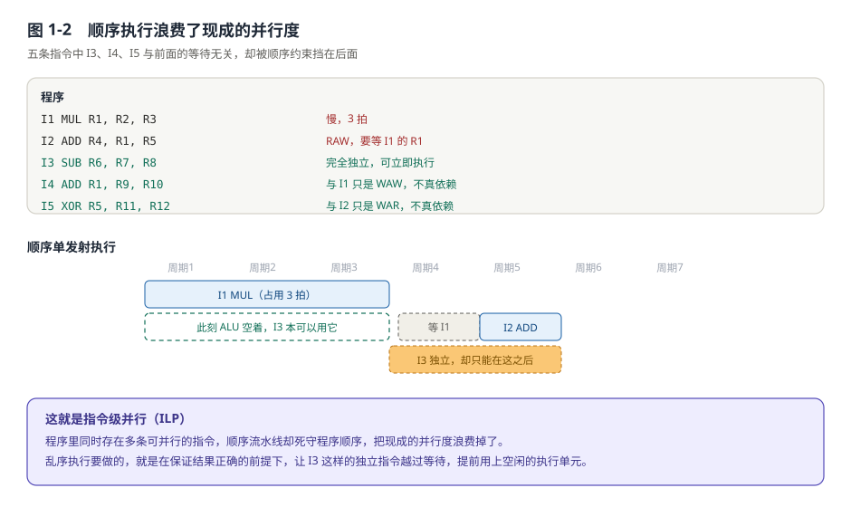
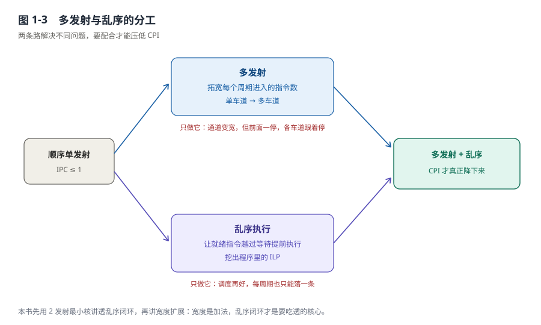
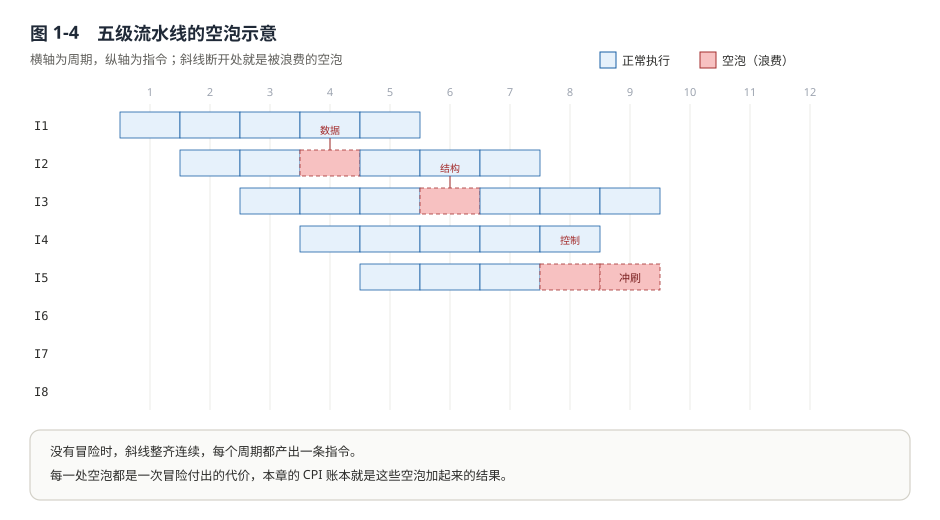

第 1 章 流水线为什么不够快了
本章导读 你已经能独立设计一个五级整数流水线，知道转发、冒险和分支预测是怎么回事。这一章不教新电路，而是先算一笔账：一条五级流水线理想情况下每个周期能完成一条指令，实际却往往做不到，损失去哪了？
把这笔账算清楚，后面所有内容都有了理由。分支预测是为了堵住哪一类损失，寄存器重命名是为了解开哪种”假堵车”，多发射和乱序又分别能捞回多少性能，都能在这张账本上找到位置。
学完本章，你应该能够： 1. 用 CPI 分解说清楚一条流水线的性能损失来自哪里； 2. 分清结构冒险、数据冒险、控制冒险各自的成因； 3. 解释为什么真相关只能等、伪相关却能想办法消掉； 4. 说清多发射和乱序各自解决什么问题，为什么两者要配合。
1.1 每个周期一条指令，是天花板吗
五级流水线把一条指令的执行拆成取指、译码、执行、访存、写回五段，让不同指令在同一时刻占用不同段。理想情况下，填满之后每个周期都有一条新指令进入、一条旧指令退出，也就是每个周期完成一条指令。用 IPC（每周期指令数）来衡量，理想的 IPC 是 1，或者说 CPI（每条指令周期数）是 1。
这是顺序单发射流水线的天花板。真实程序里能达到多少？通常在 0.5 到 0.9 之间浮动，具体看程序特性。剩下的那部分周期去哪了，就是本章要追查的问题。
先把处理器的性能公式摆出来，它只有三个因子：
CPU 时间 = 指令数 × CPI × 时钟周期要把一个程序跑得更快，只有三条路：少执行指令、降低 CPI、缩短时钟周期。指令数主要由程序和编译器决定，处理器的微结构插不上太多手；时钟周期靠工艺和电路设计，越压越难。真正留给微结构大展拳脚的，是中间的 CPI。本书后面讲的所有东西，几乎都在围着”把 CPI 往下压”打转。
顺带说一句，一味提高主频并不总能解决问题。CPI 会因为冒险而变大，有些停顿周期的长度取决于流水线级数而不是主频本身。第 1.6 节会把这层关系讲清楚。
1.2 把 CPI 拆开看
把实际 CPI 写成理想值加上各种停顿，账目就清楚了：
CPI = 1 + 结构冒险停顿 + 数据冒险停顿 + 控制冒险停顿每一项的含义是”平均每条指令因为这类原因额外等了多少个周期”。
举一个具体的数。假设有一段 1000 条指令的程序，在一条五级流水线上跑，统计下来各类停顿的周期数是：
| 损失来源 | 停顿周期 | 折算到每条指令 |
|---|---|---|
| 理想执行 | 1000 | 1.00 |
| 结构冒险 | 60 | 0.06 |
| 数据冒险 | 180 | 0.18 |
| 控制冒险 | 260 | 0.26 |
| 合计 | 1500 | CPI = 1.50 |
IPC 就是 1000 / 1500，约等于 0.67。也就是说，三级流水线的硬件每个周期都在干活，但只有三分之二的周期产出了有用的指令，剩下的周期都在”空转”或者”做无用功”。

图 1-1 把 CPI 拆成理想值加三类冒险停顿。这张账本是全书的索引，后面每一章都在削减其中某一项。
这张表里的数字是为教学编的，不同程序的比例差别很大。但结构比例是真实的趋势：在深流水线里，控制冒险那一块通常最扎眼。这也解释了为什么分支预测值得花那么大力气去做。
一个有用的直觉来自阿姆达尔定律：改善某一部分，整体收益受限于这部分所占的比例。上表里就算把控制冒险完全消掉，CPI 也只能从 1.50 降到 1.24。想大幅降 CPI，三类冒险都得治，只盯住一类收益有限。
1.3 三类冒险，三种不同的堵法
三类冒险的成因不同，对策也不同。分清楚它们，是后面选择技术方案的前提。
1.3.1 结构冒险
结构冒险是硬件资源不够用：两条指令想在同一周期用同一个部件。
五级流水线里最典型的例子是存储器。如果指令和数据共用同一个存储器端口，取指阶段要读指令，访存阶段要读写数据，两者撞车时只能让一个先走。寄存器堆也可能成为瓶颈：两条指令同时想写不同的寄存器，但写端口只有一个，就得排队。这就像只有一个加油枪的加油站，两辆车再着急也得一辆一辆来。
结构冒险的对策很直接：加资源。指令和数据分开放（分离的指令缓存和数据缓存）、寄存器堆多开写端口、乘法器多放几个。加资源要付出面积和功耗的代价，所以真实设计里是在”够用”和”太贵”之间取平衡。这一类是花硬件就能买回来的性能，本书不展开。
1.3.2 数据冒险
数据冒险是指令之间要用到彼此还没产出的结果。它就是你在五级流水线里学过转发的那一类问题。
先看一条真正躲不掉的：
I1: ADD R1, R2, R3
I2: SUB R4, R1, R5 # 要用 I1 的结果 R1I2 的源操作数是 I1 的目的寄存器，这是 RAW（写后读）相关，也叫真相关。I2 必须拿到 I1 算出来的值才能算。转发能把 ALU 结果直接送回去，省掉写回再读出的往返，但如果 I1 是一条 load、结果要访存结束才有，转发也救不了，I2 得停一个周期。这种”load 后面紧跟用它的指令”的停顿叫 load-use 冒险，是五级流水线里最常见的数据停顿。
不过，数据相关不只有 RAW 这一种。另外两种是这样的：
I1: ADD R1, R2, R3
I2: SUB R1, R4, R5 # 也写 R1，WAW（写后写）
I1: ADD R4, R1, R5 # 读 R1
I2: SUB R1, R2, R3 # 后写 R1，WAR（读后写）WAW 是两条指令写同一个寄存器，WAR 是一条先读、后面一条才写。这里要先说清楚一件容易误解的事：在顺序流水线里，这两种相关并不会造成停顿。因为指令按顺序执行、按序写回寄存器堆，I1 一定在 I2 之前完成写入，结果自然是对的，不需要额外等。
那为什么还要提它们？因为一旦想让指令乱序执行，它们立刻从”无害”变成”拦路虎”。假设 I1 是个慢操作，I2 被允许越过它先执行：
- 对 WAW，如果 I2 反而先写回，随后 I1 的旧结果再覆盖上去，R1 里留下的就是错的值；
- 对 WAR，如果 I2 先把新值写进 R1，随后 I1 才去读，读到的就是新值而不是本该读的旧值。
RAW、WAR、WAW 这三种，只有 RAW 是真相关，因为后半段真的需要前半段产出的那个数；WAR 和 WAW 只是”名字撞车”造成的假相关，数据本身并没有依赖关系。第 2 章会把这一点讲透，第 3 章给出消除伪相关的经典办法。现在先记住这个结论：真相关只能等，伪相关可以想办法绕开。乱序执行想要获得收益，前提就是先把伪相关这道墙拆掉。
1.3.3 控制冒险
控制冒险来自分支。执行到一条跳转指令时，处理器还不知道它要不要跳、跳到哪里，但流水线不能停在这里等答案，只能先猜一个方向继续取指。猜对了皆大欢喜，猜错了就要把猜错后取进来的指令全部作废，从正确的地方重新取。这些作废的周期就是控制冒险的代价。
代价有多大，取决于多快能知道分支结果。在五级流水线里，分支方向要到执行段甚至访存段才确定，这时候后面已经有好几条指令进来了，猜错就要冲刷掉它们。流水线越深、分支结果知道得越晚，要作废的指令越多，代价越大。这也解释了第 5 章和第 6 章为什么要花那么多篇幅做分支预测，以及第 6 章为什么要”提前预译码识别分支”：越早发现预测错误，浪费的周期越少。
这里可以感受到一个贯穿全书的设计思想：与其等结果出来再行动，不如先猜一个结果往下走，错了再回滚。乱序执行里对数据也有类似的做法，比如第 12 章会讲 load 的投机执行。猜与回滚，是高性能处理器反复使用的套路。
1.4 程序里其实有并行度
前面算的账都是”损失”，现在换个角度看”机会”。
回看第 3 章会反复用到的那段例子：
I1: MUL R1, R2, R3 # 慢，假设 3 拍
I2: ADD R4, R1, R5 # 真相关，要用 I1 的结果 R1
I3: SUB R6, R7, R8 # 完全独立
I4: ADD R1, R9, R10 # 写 R1，和 I1 是 WAW
I5: XOR R5, R11, R12 # 写 R5，和 I2 是 WAR在顺序单发射流水线里，I1 的乘法要 3 拍，I2 要等它的结果，于是 I2 停在译码段，后面所有指令都跟着堵住。可你看 I3：它和前面谁都不相关，ALU 明明空着，它却只能干等着。I4、I5 也差不多，真正卡住它们的只是”排在前面那条还没走”这个顺序约束，而不是数据本身没准备好。
这段程序里同时存在好几条可以并行执行的指令，这种性质叫指令级并行（ILP，Instruction Level Parallelism）。顺序流水线的问题不是没有 ILP 可用，而是它死守程序顺序，把现成的并行度浪费掉了。

图 1-2 同样五条指令，顺序执行时被 I1、I2 的等待拖住，I3 明明独立却用不上空闲的 ALU。
ILP 是乱序处理器赖以生存的原料。一段代码里 ILP 越多，乱序能榨出的性能就越高；如果指令条条都相关，再聪明的调度器也使不上劲。这也是为什么本书强调原理：真正决定性能上限的是程序里的并行度，微结构只是在把它尽量挖掘出来。
1.5 两条出路，各有各的活
挖 ILP 有两条路，它们解决的是不同问题。
第一条是多发射。顺序流水线每个周期只能取一条、发射一条，多发射把这条路加宽：每周期取两条、四条甚至更多指令，同时送进多个执行单元。它解决的是”吞吐宽度”问题，相当于把高速公路从单车道拓宽成多车道。但如果指令之间互相等待，多开几条车道也可能空着，因为车还在前面的堵点后面排队。
第二条是乱序。它不改变车道数，而是改变通过顺序：后面的指令如果操作数已经就绪，就允许它越过还在等的前面那条先执行。它解决的是”等待浪费”问题，相当于让堵在后面的空车绕到前面空着的车道上去。乱序要能成立，前提是第 1.3.2 节说的伪相关已经被化解，否则越过别人就会写错结果。
两条路是配合关系，不是二选一：
- 只多发射不乱序，宽度加宽了，但每条车道排在最前面那条指令一停，后面的也跟着停，宽度优势发挥不出来；
- 只乱序不多发射，每周期还是只能落一条指令，就算调度得再好，IPC 也过不了 1。
先把一条车道上的乱序机制讲透，再讲怎么把整套机制复制成多条车道，就是本书的安排顺序。这也是为什么全书坚持用一个 2 发射的最小乱序核当主线：宽度的扩展是加法，乱序的闭环才是真正要吃透的东西。

图 1-3 多发射拓宽每周期进入的指令数，乱序挖出可提前执行的指令，两者一起才能把 CPI 压下去。
1.6 主频、级数与收益的边界
回到 1.1 节留下的话头：为什么光靠提高主频不够。
CPU 时间等于指令数乘 CPI 再乘时钟周期。提高主频缩短的是时钟周期，看似直接有效。但有两个问题跟着来。
一是有些停顿按周期计，不按时间计。一次分支预测错误的冲刷要作废固定数量的流水线级，级数越深，作废的周期越多。主频提高后每个周期变短了，但作废的周期数没变，这部分损失折算成时间确实变小了；可深流水线为了跑高频必须级数更多，两种效应相互抵消，最后未必划算。这就是当年 Pentium 4 深流水线遇到困境的原因之一。
二是复杂度带来的收益递减。为了降 CPI 加转发、加预测、加乱序，每加一样都要付出面积、功耗和设计复杂度。阿姆达尔定律在这里再次起作用：把一类停顿降到零，整体收益受限于剩下的部分。所以真实设计追求的是投入产出比的平衡点，而不是把某一项做到极致。
本书选择的平衡点很清楚：只围绕”多发射 + 乱序”这条主线，把最有价值的机制讲透，不追求把每一项都做到工业级。
1.7 用图形看空泡
这一章的账目也可以用图形直观地看。把五级流水线的执行过程画成一张时空图，横轴是周期、纵轴是指令，每条指令占一格。没有冒险时，这张图是一道整齐的斜线；出现冒险时，斜线上会裂开一个个空泡，那些空泡就是浪费掉的周期。

图 1-4 时空图中的空泡。三类冒险都会让本该连续的斜线断开，本章的账就是这些空泡加起来的结果。
配套的 Digital 文件 code/digital/01_hazard_detect.dig 做了一个 load-use 冒险的检测电路：当后一条指令的源寄存器恰好等于前一条 load 的目的寄存器时，输出停顿信号。拨动输入，看停顿信号何时亮起，就能对”数据冒险是怎么被检测出来的”有个直观印象。它演示的正是 1.3.2 节说的那类停顿。
关于图形与代码的分工：Digital 擅长把模块连接、信号传递这类局部机制画出来、动起来，所以本书用它演示检测电路、握手、广播这些看得见的过程；完整的乱序数据通路则用 SVG 分层图配合第 3 章的 Verilog 骨架来理解。这一章是认知章，不涉及 Verilog 实现。
1.8 香山一瞥（选读）
香山从设计之初就瞄准高性能，走的自然是多发射加乱序这条路，而且把本书后面要讲的机制几乎都用上了：前端有分支预测和取指解耦，后端有寄存器重命名、乱序发射、乱序执行和按序提交。本书后面每讲到一个机制，末尾都会用”香山一瞥”点出它在真实处理器里的对应形态，只讲设计思想，不展开实现细节。
对本章而言，值得留意的是香山的账本和本书是同一本：它做解耦前端、做高精度分支预测，本质上是在削减控制冒险那一项；做重命名和乱序发射，是在削减数据冒险造成的等待；把发射宽度做宽，是在提高每周期吞吐。差别只在规模和工程细节。把这本小账本读懂，再看真实处理器的设计取舍就有了抓手。
1.9 本章小结
- 顺序单发射流水线的 IPC 天花板是 1，实际 CPI 要加上三类冒险的停顿。
- 三类冒险中，结构冒险靠加资源解决，控制冒险靠预测和快速纠错缓解，数据冒险里的真相关只能等、伪相关可以消除。
- 顺序流水线里 WAR、WAW 不会造成停顿，但它们一旦允许乱序就会写错结果，是乱序必须拆掉的一堵墙。
- 程序里普遍存在指令级并行，顺序执行浪费了它；多发射拓宽吞吐，乱序挖出可提前执行的指令，两者配合才有效。
- 收益受阿姆达尔定律约束，单纯提高主频或只改善一类冒险，回报都有限。
思考题
- 用本章的账本算一算：如果某程序 1000 条指令、总周期 1800，其中控制冒险停顿 400 周期，那么把分支预测做到完美（控制冒险停顿降为 0）后，CPI 能降到多少？收益是否抵得上付出的硬件代价？
- 为什么说顺序流水线里 WAR 和 WAW 不会造成停顿，而乱序流水线里会？各举一个写错结果的例子说明。
- load-use 冒险为什么不能用普通的 ALU 转发解决？它和非 load 的 ALU 结果转发有什么本质区别？
- 多发射和乱序分别解决什么问题？如果只做其中一样，IPC 的上限各是多少，为什么？
- 提高主频能缩短时钟周期，为什么深流水线反而可能让分支预测错误的代价变大？
下一章：第 2 章 真相关与伪相关。把本章点到为止的三种相关讲清楚，看清哪些等待是躲不掉的，哪些只是名字撞车造成的假象。